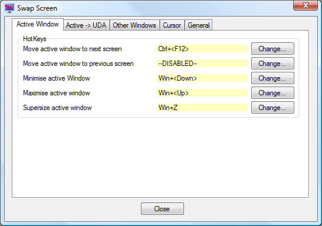
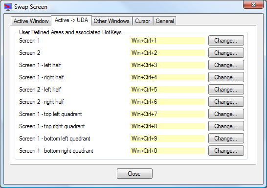
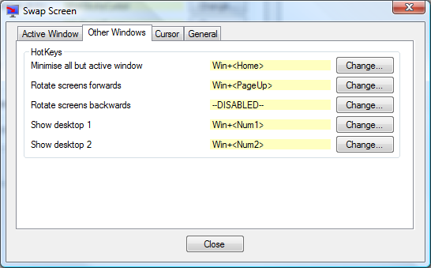
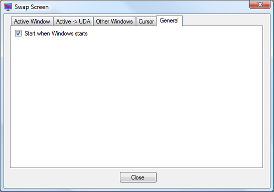

Swap Screen
Swap Screen
Swap Screen uses hotkeys to simplify the process of handling windows in a multiple monitor setup.
This includes features such as moving the current window to the next screen and minimising all windows on a single screen only.
It also includes mouse/cursor control allowing you to lock the mouse onto a single screen or providing resistance to moving between screens.
Usage
When SwapScreen.exe is run it will put itself into the notification area of the taskbar.
Right clicking on the SwapScreen icon in the notification area will bring up its context menu where you will find options to minimise all windows on individual monitors, and to move all application windows to the next monitor.
Double clicking on the SwapScreen icon in the notification area will bring up the options screen which allows you to specify which hotkeys to use for the various possible actions.
By default only the Move active window to next screen hotkey is enabled, but by clicking on the appropriate 'Change...' button, you can enable the other hotkeys and choose a suitable key combination for the hotkey.
Certain key combinations can not be used as hotkeys. This usually happens because that hotkey has already been assigned a use, either in this program or in another program or by Windows itself. If you do try to use one of these, then you will be told that this is the case and you will be able to change the key combination to something different.
The options window contains five tabs:
'Active Window' tab
This contains hotkeys which have an impact on the active window only.
Move active window to next screen
This moves the active window onto the next screen, even if it is currently maximised.
If you are running Windows 7, then Windows 7 already provides this functionality with the
Win+Shift+<Right> hotkey. If you are happy with this, then you can disable Swap Screen's hotkey for this. However you may find this combination is quite cumbersome in which case you can define your own simpler hotkey.
Move active window to previous screen
This performs the opposite of Move active window to next screen.
If you are running Windows 7, then Windows 7 already provides this functionality with the
Win+Shift+<Left> hotkey.
If the active window can be minimised, then it is minimised.
If it is already minimised, then it is restored.
If you are running Windows 7, then Windows 7 already provides this functionality with the
Win+<Down> hotkey.
If the active window can be maximised, then it is maximised.
If it is already maximised, then it is restored.
If you are running Windows 7, then Windows 7 already provides this functionality with the
Win+<Up> hotkey.
If the active window can be resized, then it is made large enough to cover all screens.
This may mean that part(s) of the window may not be visible if your screens have different resolutions,
or if you have a fixed taskbar displayed.
If you press the hotkey again on a window that has just been supersized, then the window is restored to its
previous location and size.
Swaps the positions of the top two windows around.
Moves the active window to the previous half screen (splitting each screen into 2 columns).
This is similar to the Windows 7 feature using Win+<Left>, except this will
only cycle through the half screens and not the normal size of the window.
Moves the active window to the next half screen (splitting each screen into 2 columns).
This is similar to the Windows 7 feature using Win+<Right>, except this will
only cycle through the half screens and not the normal size of the window.
Moves the active window to the previous half screen (splitting each screen into 2 rows).
Moves the active window to the next half screen (splitting each screen into 2 rows).
'Active -> UDA' tab
These allow you to move the active window to a User Defined Area (UDA).
When first run, 10 default UDA's are generated, but you may change the name, location, size and the hotkey for all of these.
'Other Windows' tab
This contains hotkeys which have an impact on all or multiple windows.
Minimise all but active window
This will attempt to minimise all windows apart from the active window.
If you are running Windows 7, then Windows 7 already provides this functionality with the
Win+<Home> hotkey.
This will attempt to move every application window onto the next screen from where it is currently displayed.
This does the reverse of Rotate screens forwards.
This will attempt to minimise all application windows on the first screen.
This will attempt to minimise all application windows on the second screen.
'Cursor' tab

These options allow you to control how the cursor moves between the screens.
The cursor can be in one of three modes:
- Free - the cursor is free to move unhindered between screens
- Sticky - there is resistance to moving the cursor between screens
- Locked - the cursor is locked onto a single screen
Cursor free to move between screens
This will return cursor movement to the default state where the cursor is allowed to move freely between the screens.
If the hotkey for this option is left as disabled, then the hotkeys for Cursor movement between screens is sticky and Lock cursor onto screen work as toggle keys. If this hotkey is defined, then the sticky and lock hotkeys do not toggle.
Cursor movement between screens is sticky
The cursor is allowed to move between screens, but there is some resistance to moving between the screens. You can adjust the resistance using the Resistance to movement between screens slider.
This locks the cursor onto the screen and may not move off the screen no matter how much you move the mouse.
To move the cursor to another screen, you would have to switch to another mode, or use one of the options below.
This will move the cursor to the next screen.
Move cursor to previous screen
This will move the cursor to the previous screen.
Resistance to movement between screens
This slider controls the resistance to moving the cursor between screens when in Sticky mode.
This effectively controls the extra distance that the mouse must move before it is allowed to move to the next screen.
Allow cursor to move freely if this key is pressed
If this is checked, then regardless of mode, you can freely move the cursor between screens while the selected key is pressed. Any one of the Control or Shift keys (left or right) may be chosen.
Allow cursor to return freely to the primary screen
If this is checked, then regardless of mode, you can freely move the cursor over a screen boundary if the cursor is being moved onto the primary screen.
Default cursor mode on startup
Allows the cursor mode to be automatically set when SwapScreen starts.
'General' tab
This contains general options.
Start when Windows starts
If you want SwapScreen to start automatically when your computer boots, then just check the 'Start when Windows starts' option.
Note: if you have used an older version of Swap Screen and have added a shortcut to its executable into the StartUp folder, then you will want to remove this shortcut or two copies of the program would be started.
Application windows
SwapScreen attempts to detect those windows which it would not make sense to move and ignores them.
The following windows will not be moved or minimised by SwapScreen:
- Any window that does not have the WS_VISIBLE attribute set.
- Any window that has been deliberately positioned offscreen.
- Any window with the WS_EX_TOOLWINDOW style, unless this is the active window and you are performing an operation on the active window.
If the SwapScreen hotkey is used when running a full screen application, normally a game, then with some games the image on the primary screen is copied to the next screen, but the game continues on the primary screen. However this does not work with all games. In some cases you may find that you have to press the hotkey again to restore normal operation of the game, and in others it can mess the current game up so use with caution.
'Run as Administrator'
Normally, SwapScreen can not move or minimise any window belonging to applications that have been started using the 'Run as Administrator' option as it will have insufficient permission to do so. Also when such a window is the active window, then the mouse/cursor modes do not work.
If you want SwapScreen to be able to move or minimise such windows and for the mouse/cursor modes to always work, then you will need to run SwapScreen with the 'Run as Administrator' option.
Portable Mode
SwapScreen has the ability to run from a portable device, such as a USB memory stick.
Too ensure that SwapScreen uses its portable mode, you will need to copy SwapScreen.exe to your portable device and in the same directory create a writeable file SwapScreen.config which SwapScreen will use to save its settings too. You can either create an empty SwapScreen.config file, or if you have previously used SwapScreen in a non-portable mode you can copy your existing settings from eg. %LOCALDATA%\GNE\SwapScreen.exe_Url_...\1.4.0.0\user.config (remember to rename your user.config to SwapScreen.config on your portable device).
Portable mode is ideal if you regularly use a lot of different computers and want to carry your applications and settings around with you.